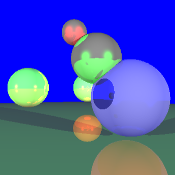
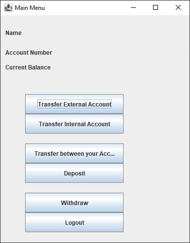

Programming Language(s): C++
Libraries and/or Frameworks: OpenGL
I created my own raytracer in C++ for my Computer Graphics course. It has shadows, reflections, and transformations.

Programming Language(s): C++
Libraries and/or Frameworks: OpenGL
Fractals I coded in OpenGL in Computer Graphics with Phong and Gouraud lighting. The fractals are 3D Sierpinski triangle and Menger Sponge.

Programming Language(s): Java
IDE Used: IntelliJ IDEA
An application I played a large role in developing. It includes a login form with an account database containing user information and account balance. Transactions similar to a bank are made possible and affect the user information and account balance as necessary.